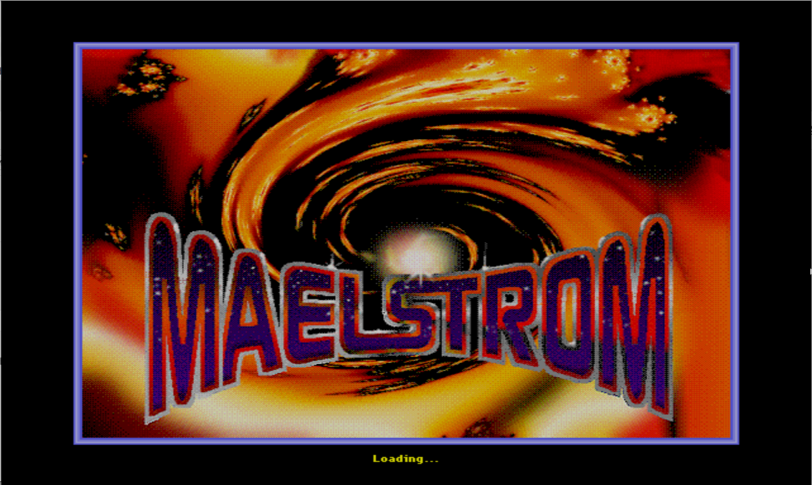
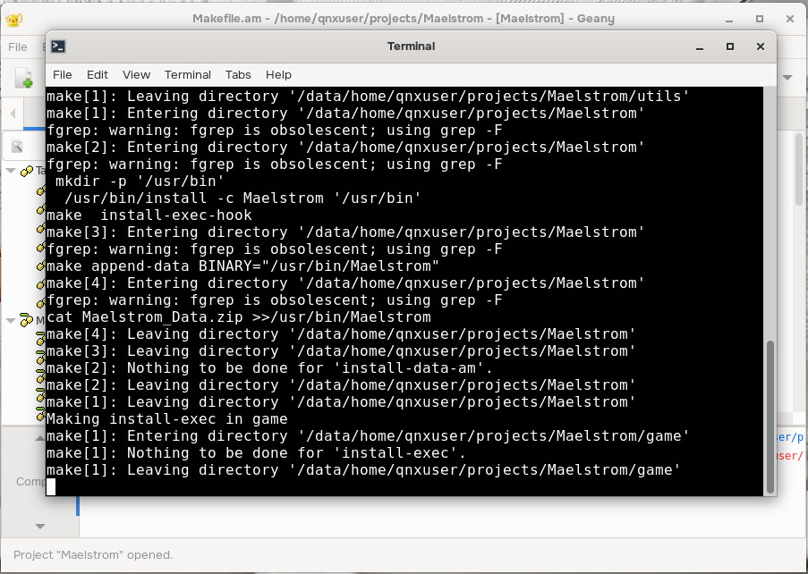

Maelstrom is an Asteroids clone, ported to SDL, but was originally created in 1992 for Mac OS. Refer to the Maelstrom Wikipedia entry for more information about the game:
https://en.wikipedia.org/wiki/Maelstrom_(1992_video_game)
«««< HEAD The purpose of this project is to build a patched version of the game, ported to QNX, on the QNX Developer Desktop.
The purpose of this project is to build a patched version of the game, ported to QNX, on the QNX Developer Desktop.
origin/main
cd ~/repos
git clone https://github.com/libsdl-org/Maelstrom.git -b Maelstrom3
cd ~/repos/Maelstrom
git checkout 063c388fb6e4b7365d005cd25f56844ef94aca51
git apply ./Maelstrom.patch
rm ./Maelstrom.patch
This project can be built two ways:
Proceed to the next sections matching your build preference.
autoreconf -fi
chmod u+x autogen.sh
./autogen.sh
CC=clang CXX=clang++ \
CFLAGS="${CFLAGS} -Wno-reserved-user-defined-literal -Wno-register -Wno-implicit-function-declaration" \
LDFLAGS=" -L/usr/lib -lSDL2 -lm -liconv -lscreen -lEGL -lsocket" \
./configure --with-sdl-prefix=/usr --prefix=/usr --disable-sdltest
make -j4
sudo make install install-exec install-data install-am
sudo chmod -R a+r /usr/games/maelstrom/*

A terminal opens. Enter your password when prompted and then the game and its assets will be installed. It will take a few seconds to complete.sudo vi /usr/bin/launchMaelstrom
#!/bin/bash
SDL_VIDEODRIVER=qnx Maelstrom -windowed
sudo chmod a+x /usr/bin/launchMaelstrom
launchMaelstrom
Key | Action | Notes | |
L | Cheat Menu | Allows selecting the number of lives, the wave number up to 40, and Turbofunk, or fast motion. | |
X | Hidden Poem | popup with a hidden poem | |
A | About | popups with About info for the game | |
M | Multiplayer | See the networking README for details to set up | |
C | Settings | Adjust the keyboard controls | |
S | Game Center | ||
P | Play | ||
Q | Quit | ||
Key | Action |
Tab | Fire |
Up Arrow | Thrust |
Left Arrow | Rotate Ship Left |
Right Arrow | Rotate Ship Right |
P | Pause Game |
Esc | Quit Game |
Want to learn more about SDL?
Here are two SDL tutorial sites found while researching SDL integration into the Quickstart image, which also include sample code you can download and build: